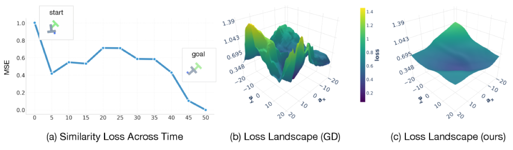

Why it matters왜 중요한가
A world model is only as useful as the planner that queries it — and gradient planners keep breaking on long horizons.
월드모델은 그것에 질의하는 플래너만큼만 쓸모 있다 — 그런데 그래디언트 플래너는 긴 호라이즌에서 계속 깨진다.
Two planning families dominate. Zero-order methods (CEM, MPPI) are robust but degrade badly as the horizon and action dimension grow, because they roll out trajectories serially and explore by brute force. Gradient-based methods exploit the differentiability of deep world models for efficiency, but they get trapped in jagged local minima and suffer "backprop-through-time" instability. Worse, in vision latent spaces the gradient w.r.t. state inputs is brittle: the optimizer finds tiny adversarial perturbations that fake a low loss with unphysical transitions. GRASP reframes the problem so the world model can be evaluated in parallel and the dangerous gradient paths are simply removed.
두 계열이 지배적이다. Zero-order(CEM, MPPI)는 견고하지만 호라이즌과 행동 차원이 커지면 급격히 무너진다 — 궤적을 직렬로 롤아웃하고 무차별 탐색에 의존하기 때문이다. Gradient-based는 깊은 월드모델의 미분 가능성을 활용해 효율적이지만, 울퉁불퉁한 지역 최소값에 갇히고 "BPTT" 불안정성에 시달린다. 더 나쁘게는, 시각 잠재 공간에서 상태 입력에 대한 그래디언트가 깨지기 쉽다: 옵티마이저가 미세한 적대적 섭동으로 비물리적 전이를 만들어 손실을 가짜로 낮춘다. GRASP는 월드모델을 병렬 평가할 수 있도록 문제를 재정의하고, 위험한 그래디언트 경로를 아예 제거한다.

By the numbers핵심 숫자
(CEM 2.8% · GD 6.4% · LatCo 0%)GRASP 성공률 @ Push-T H=80
(CEM 2.8% · GD 6.4% · LatCo 0%)
(best baseline GD 37.6%)GRASP 성공률 @ Push-T H=50
(최고 베이스라인 GD 37.6%)
(GD 76.3s · CEM 96.2s)중앙 성공 시간 @ H=50
(GD 76.3s · CEM 96.2s)
(shooting grows exp. in T)호라이즌 T 무관 그래디언트 Lipschitz
(shooting은 T에 지수 증가)
+ periodic full-rollout sync핵심 3요소: 펼침·노이즈·grad-cut
+ 주기적 full-rollout 동기화
visual dynamics학습된 시각 dynamics에서
테스트한 호라이즌
Results — GRASP scales where baselines collapse결과 — 베이스라인이 무너지는 곳에서 GRASP는 확장된다
| Push-T | CEM | GD | LatCo | GRASP |
|---|---|---|---|---|
| H=50 (success) | 30.2 | 37.6 | 4.2 | 43.4 |
| H=80 (success) | 2.8 | 6.4 | 0.0 | 10.4 |
| H=50 (median time, s) | 96.2 | 76.3 | 1114.7 | 15.2 |
In one diagram한 장의 그림
Idea: a stochastic, lifted optimal controller아이디어: 확률적·펼침형 최적 제어기
Virtual states + Langevin
Instead of optimizing only actions through a serial rollout, treat the per-step states s₁…s_T as independent variables and penalize a dynamics-consistency loss ‖st+1−F(st,at)‖². This lets every world-model call run in parallel, and isotropic Gaussian noise on the states (Langevin-style) lets the planner hop between basins instead of getting stuck behind a wall.
직렬 롤아웃으로 행동만 최적화하는 대신, 각 스텝 상태 s₁…s_T를 독립 변수로 두고 dynamics-consistency 손실 ‖st+1−F(st,at)‖²를 부과한다. 덕분에 모든 월드모델 호출이 병렬로 돌고, 상태에 등방성 가우시안 노이즈(Langevin식)를 더해 벽 뒤에 갇히지 않고 분지 사이를 건너뛴다.
Cut state gradients, shape the goal
Vision world models have brittle ∇sF, so GRASP applies stop-gradient on state inputs — gradients flow only to actions and target states. To keep a global signal, it adds a dense goal loss ‖F(s̄t,at)−g‖² at every step, drifting each one-step prediction toward the goal.
시각 월드모델의 ∇sF는 깨지기 쉬워서, GRASP는 상태 입력에 stop-gradient를 적용한다 — 그래디언트는 행동과 타깃 상태로만 흐른다. 전역 신호 유지를 위해 매 스텝마다 dense goal 손실 ‖F(s̄t,at)−g‖²를 더해, 각 1-스텝 예측을 목표 쪽으로 끌어당긴다.
How it works어떻게 작동하나
- Lift into (s, a)(s, a)로 펼치기Add virtual states s₁…s_T as optimization variables and rewrite planning as a dynamics-consistency + goal loss — making all T world-model evaluations parallel (a "collocation" view).가상 상태 s₁…s_T를 최적화 변수로 추가하고, 계획을 dynamics-consistency + goal 손실로 재작성해 T개의 월드모델 평가를 모두 병렬화(collocation 관점)한다.
- Inject Langevin noiseLangevin 노이즈 주입Add Gaussian noise to the state iterates each step so the optimizer explores the lifted space and escapes unphysical local minima (e.g., a path straight through a wall).매 스텝 상태 반복값에 가우시안 노이즈를 더해 펼쳐진 공간을 탐색하고 비물리적 지역 최소값(예: 벽을 관통하는 경로)을 탈출한다.
- Grad-cut + dense goalgrad-cut + dense goalStop-gradient through state inputs of F so the brittle ∇ₛF can't be exploited; add a per-step ‖F(s̄ₜ,aₜ)−g‖² goal term so every action still gets a clean, task-aligned gradient.F의 상태 입력에 stop-gradient를 걸어 깨지기 쉬운 ∇ₛF가 악용되지 않게 하고, 스텝마다 ‖F(s̄ₜ,aₜ)−g‖² goal 항을 더해 모든 행동이 깔끔한 과제 정렬 그래디언트를 받게 한다.
- Periodic full-rollout sync주기적 full-rollout 동기화Every K_sync iterations, run a few J_sync steps of standard backprop-through-the-rollout GD on the original serial objective to sharpen and re-anchor the plan to true dynamics.K_sync 반복마다 원래 직렬 목적함수에 대해 J_sync번의 표준 BPTT GD를 돌려, 계획을 날카롭게 다듬고 진짜 dynamics에 다시 고정한다.
What to take away그래서, 가져갈 것
Long horizons stop collapsing. At Push-T H=80, GRASP keeps 10.4% success while every baseline drops to single digits or zero — and it's ~5× faster to a successful plan at H=50.
긴 호라이즌이 무너지지 않는다. Push-T H=80에서 GRASP는 10.4% 성공을 유지하는 반면 모든 베이스라인은 한 자릿수 또는 0으로 추락 — H=50에선 성공까지 약 5배 빠르다.
The state gradient is the enemy. The key insight is that ∇ₛF in vision world models is adversarial, not informative — so cutting it (not refining it) is what makes gradient planning robust.
상태 그래디언트가 적이다. 핵심 통찰은 시각 월드모델의 ∇ₛF가 정보가 아니라 적대적이라는 것 — 그래서 다듬는 게 아니라 잘라내는 것이 그래디언트 계획을 견고하게 만든다.
Classical control, modernized. Lifting states is collocation/multiple-shooting; the theory shows lifted grad-Lipschitz is O(1) in T while serial shooting grows exponentially.
고전 제어의 현대화. 상태 펼침은 collocation/multiple-shooting이며, 이론적으로 펼침의 grad-Lipschitz는 T에 대해 O(1)인 반면 직렬 shooting은 지수적으로 커진다.
A hybrid, not a purist. The periodic full-rollout sync admits gradient relaxation alone isn't enough — exploration on the smooth landscape plus occasional exact refinement is the winning combo.
순수주의가 아닌 하이브리드. 주기적 full-rollout 동기화는 그래디언트 완화만으로는 부족함을 인정한다 — 매끈한 지형 탐색 + 가끔의 정밀 정제가 승리 조합이다.